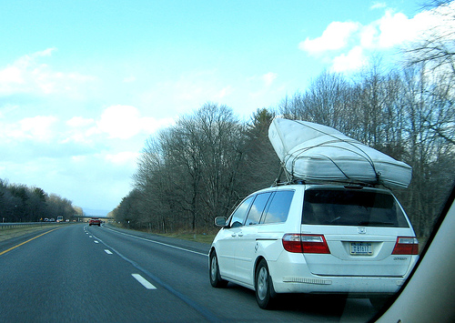
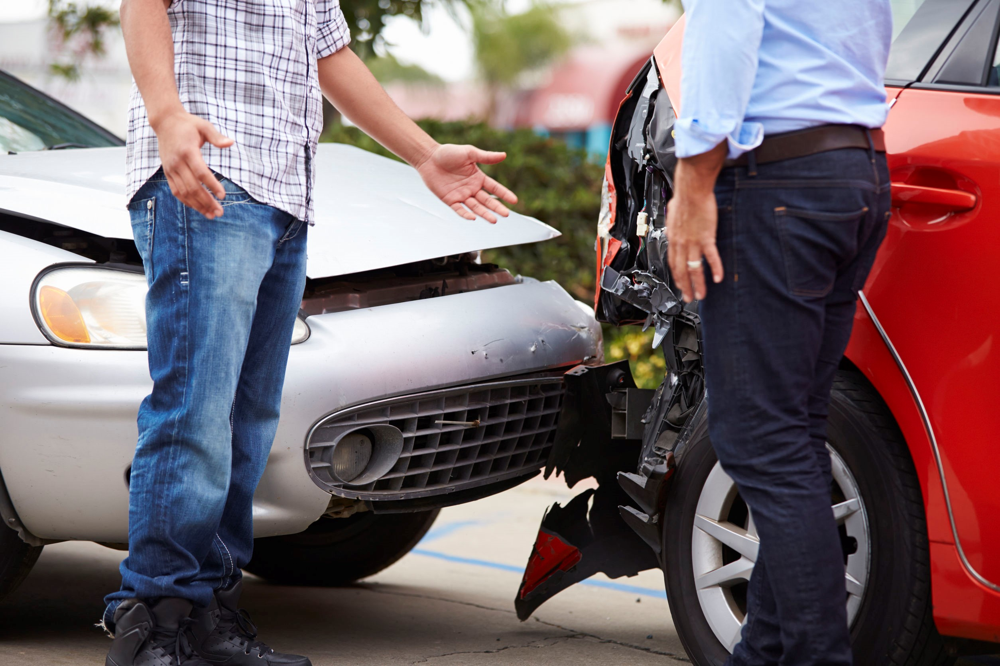

Why self-driving cars are not going to happen
Google has been developing and testing their self-driving cars for quite a while, making headlines frequently, but from some simple observations, you may see that those cute robotic cars will never going to work in the real world. Problem 1: Difficulty in computer cognitionDriving a car takes a lot of intelligence. Interesting enough, such a daily activity requires a lot more intelligence than playing chess or go. To be safe, not only must a self-driving car obey traffic rules, it must also actively predict and avoid potential dangers on the road. It shouldn't just rely on last-second reactions.  Here is a simple example of such an upcoming danger-a falling mattress from a front car. This can be immediately recognized by a human. He wouldn't wait for the mattress to hit the ground, because that would be too late. He would avoid that car, quickly accelerate and pass it, and possibly honk and warn the other driver. How can a self-driving car do that? How can a computer know that there is a mattress strapped on the top of the other car, and it's likely to fall off? This calls for not only intelligence, but also experience and common sense. Will machine learning, deep learning or neural networks make this work? Very unlikely. A computer cannot know what is a "falling mattress" even if it crashes with a falling mattress a thousand times. But it is amazing how humans (and animals) know the danger almost immediately without previous exposure to such a situation. This kind of animal intelligence is very general. It doesn't require much "learning". It is in their instinct. True human cognition is needed for the self-driving car to recognize objects and predict potential dangers. This is the biggest obstacle of making the self-driving car marginally work as well as a human. Yes, we have seen Google's cars on the roads, but they are not yet handling the real, complex world. Far from it. They only come out on nice sunny days, driving around the few simple and uncrowded roads in the Mountain View area. I have never seen self-driving cars on a free way or a populated city. Even in such ideal conditions, Google's self-driving cars had 272 "disengagement events" in the past year, which required human intervention. Just recently, a self-driving car hit a bus because of the computer's misjudgement. From the recent victory of AlphaGo over the human Go champion, you may think that the powerful AI technologies behind AlphaGo, such as neural networks and deep learning, can also be used to enhance self-driving cars. Unfortunately, they will not help much in this case. If you take a deep look into them, the current machine learning or deep learning technologies hasn't really much to do with human learning, intelligence or cognition. You don't need true intelligence to play go? Unfortunately you are right. AlphaGo just proved to us that it is the case ;) Chess and go are just board games. No matter how hard those games seemingly are, they are all played in very simple and controlled environments, thus are easy for computers to apply their brutal power. Self-driving car has to deal with the real world, and the real world is very complex, full of surprises. This is where only true human intelligence can survive. So for a self-driving car to handle the variety of road situations and emergencies, it needs true human cognition. Unfortunately nobody has any idea how to implement human cognition in a machine, because we still haven't much idea how our own cognition system works. Problem 2: Liability issues You may think that for practical uses, self-driving cars don't need to be 100% perfect in their judgements and actions. Unfortunately, those do need to be perfect before they can be allowed on the roads. They can't just be better than the average human drivers. They must be better than the best human drivers. That is, they must be the best of the best. Thus they must satisfy two requirements:
Why should they satisfy such strict requirements? 1) For every accident, somebody must be held liable for the property losses and injuries. If humans are drivers, one of them will be liable. If it was a self-driving car causing the accident, Google will be liable. Google's software will be considered the driver at fault. 2) A human can predict and avoid potential dangers on the road, for example a falling mattress from a front car. Thus a self-driving car must be able to do the same. If it fails to predict danger and an accident happens, the self-driving car will also be liable to losses that resulted from such inability. So Google is going to be liable for every accident that is either 1) caused by the incorrect actions of the self-driving car or 2) caused by its inability of avoiding danger. The second point is especially difficult to achieve, and it requires very high level human cognition. How much money has Google to pay all the damages, medical expenses and lives of people? Can any amount money be able to pay for people's lives? Nope. This is why self-driving cars should never cause an accident, and it should never fail to avoid an accident that would have been avoided by a human. They need to be 100% correct in their cognition, prediction and handling of dangerous situations. 99.9999% correctness is not enough. But as I already told you, we have no idea when or whether such a high level human cognition can be implemented in a machine. Thus, I don't see how (fully) self-driving cars can ever be put into daily use without a fundamental breakthrough. Choose easier problemsAlthough fully self-driving cars are very hard to achieve, and I can't see how Google (Tesla, Mercedes, or anybody) could possibly make it happen in the near future, there is indeed something else we can do with the current technologies. Lucky enough, Automatic braking, distance keeping, and many things other than taking over the car's steering wheel, can possibly be achieved. Why can't a computer control the car's steering? Because of exactly the same issues I have noted above. Steering the direction of the car requires true human cognition and common sense, and this also implies serious liability issues. Once the computer take control of the steering and direction, technically speaking the human is no longer the driver of the car. Thus the software must be liable for any resulting accidents. The same principles also apply to Tesla's Autopilot. It is wrong of Tesla Autopilot to take full control of steering. If you restrict the problem to automatic braking, thing are much easier. Automatic braking can be implemented in a dumb way. The computer just need to actuate the brake when the radar detects obstacles ahead. It doesn't need to understand what the obstacle really is. It just need to be large enough to cause a collision. Since the automatic braking is only assisting the driver to prevent possible collisions that he failed to act, and the human is still the driver of the car, he is still responsible for the consequences. So Problems 1 and 2 no longer applies to automatic braking. |